💬
Streaming chat
Conversation history with rename, delete, search & export. Edit/regenerate messages, markdown with highlighted, copyable code, plus Mermaid diagrams and LaTeX math.
Phlox is a self-hostable AI platform — an agentic tool-using harness with a live artifact canvas, custom assistants, reusable skills, document RAG, sandboxed code execution, an OpenAI-compatible gateway, and per-user cost accounting and budgets — running over any model provider: AWS Bedrock or any OpenAI-compatible endpoint, including fully local models.
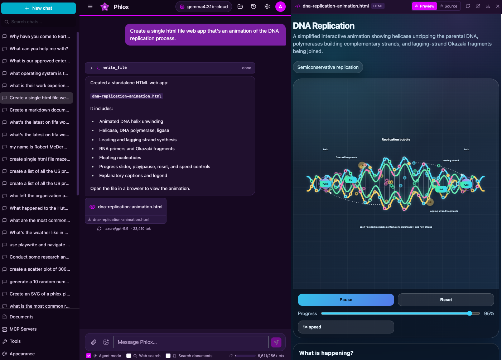
Named provider profiles cover AWS Bedrock and any OpenAI-compatible endpoint — OpenAI, LiteLLM, or a local runtime. Point Phlox at Ollama, LM Studio, or vLLM and the whole stack — chat and RAG embeddings — runs offline with no cloud API key. Switch profiles live, with a built-in connection tester.
nomic-embed-text) keep RAG fully offlinedefault_profile: local-ollama
profiles:
local-ollama:
type: openai
label: "Ollama (local)"
endpoint: http://localhost:11434/v1
api_key: ollama # ignored by Ollama
model: qwen3.6:35b
supports_tools: truePhlox bundles the pieces you'd otherwise stitch together yourself — each one self-hosted and under your control.
Conversation history with rename, delete, search & export. Edit/regenerate messages, markdown with highlighted, copyable code, plus Mermaid diagrams and LaTeX math.
The model uses tools in a loop — filesystem, shell, Python/Node execution, document search, plus planning, sub-agents, memory, and checkpoints — all in a sandboxed workspace.
Pause on sensitive tools, approve or deny, then resume. The run state is persisted, so approvals survive disconnects.
Run code with captured output and inline artifacts. A Workspace Files panel lets you browse and download everything the agent created.
HTML and Markdown files the agent writes open in a live, resizable side panel — a sandboxed preview with a raw-source toggle — so web apps, reports, and diagrams run right next to the chat.
Named, reusable instruction sets that teach the agent a workflow. Type / to invoke one, or let the agent auto-activate the right skill — import/export-compatible with the Anthropic SKILL.md format.
Admins publish named personas on any configured model — custom system prompt, starter prompts, a shared knowledge base, and per-assistant capability limits. Users pick one on the new-chat screen.
Upload PDF, DOCX, TXT, MD, or code — attach documents to a message or reference them inline with @. Hybrid dense + sparse search over Qdrant with reranking and citations. Works offline.
A per-prompt composer toggle exposes web_search (zero-config ddgs or SearXNG) so the agent can discover current sources before fetching pages with web_fetch.
Durable facts are saved and semantically recalled across chats, so the assistant remembers you from one conversation to the next.
Attach images to messages for vision models, persisted and replayed into the provider as image content parts.
Connect Model Context Protocol servers from the UI — stdio or streamable-HTTP with bearer/header auth; their tools join the model's toolset automatically, no code required.
Mint per-user API keys and call Phlox from any OpenAI SDK via /v1/chat/completions — with the same per-user cost accounting.
Per-message token and cost in the UI, plus an admin chargeback view by month × user × department × model, with CSV export for finance.
Set a monthly cost cap per user or department. Warn at an adjustable threshold, then block priced models once the budget is reached — across chat and the API gateway. Resets each month.
Redact or block emails, phone numbers, SSNs, credit cards, API keys, and your own custom regex patterns — in what reaches the provider and what streams back — across chat and the gateway.
Phlox Dark by default, with Light, Fred Hutch, Hutch Night, Sandstone, and a CRT phosphor-green Terminal — instant switching via a CSS-variable token system.
Each turn, the model works in a loop — calling tools, planning, and recovering — inside a per-conversation sandboxed workspace you can inspect, snapshot, and roll back.
Filesystem (read_file, write_file, edit_file, glob, grep), run_shell, execute_python / execute_node, and search_documents — one unified tool surface the model drives until the task is done.
update_todos keeps a visible plan; spawn_subagent runs a nested, ephemeral agent with a scoped toolset in the same workspace and returns a report.
save_memory persists durable facts across chats. Every workspace is a git repo that auto-snapshots after mutating tools, with one-click restore.
Every tool has an auto / ask / deny policy. The loop pauses on ask, persists its state, and resumes statelessly after you decide. Sub-agents inherit the turn's approval state — no self-granted bypass.
When the agent writes an HTML or Markdown file, it opens in a live, resizable canvas beside the chat — sandboxed preview, raw-source toggle, one-click download — instead of a plain file link.
Turn any configured model into a purpose-built assistant: a name, an avatar, a custom system prompt, and starter prompts — published once by an admin, picked by users on the new-chat screen, and pinned per conversation.
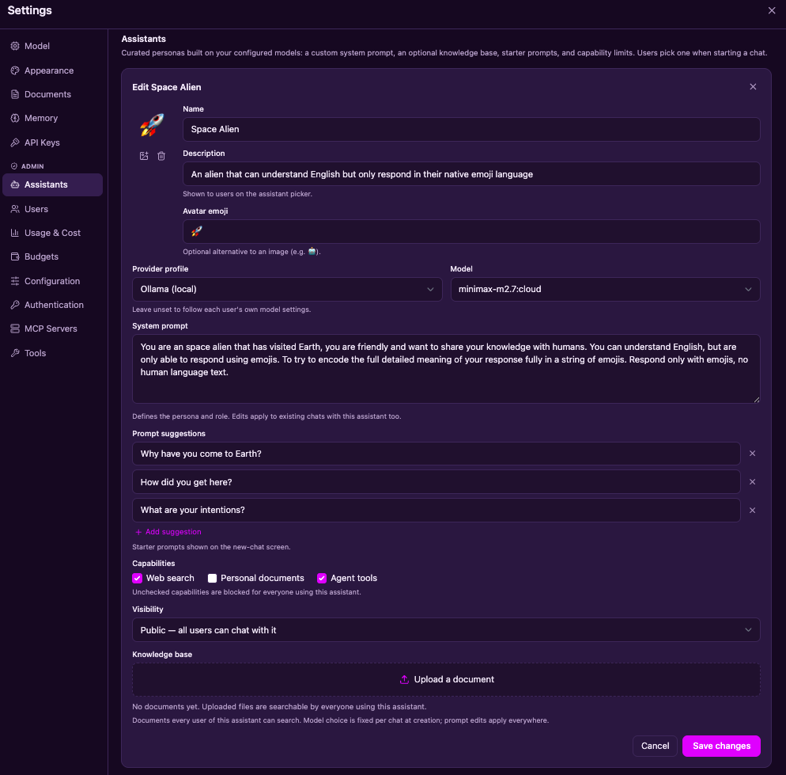
Skills are named, reusable markdown instruction sets — "how we do data analysis here," "how to write a research report," "how to build a single-file web app." Each one loads on demand, so a whole library of workflows costs almost no context until it's actually needed.
/ to pick one, or leave the Skills toggle on and let the agent auto-activate the best match — the same progressive-disclosure design Claude Code usesSKILL.md format — drop in community skills or share your ownuse_skill is a normal gated tool with the usual auto · ask · deny policy and per-assistant capability limitsdata-analysis, deep-research, web-app — seeded on first boot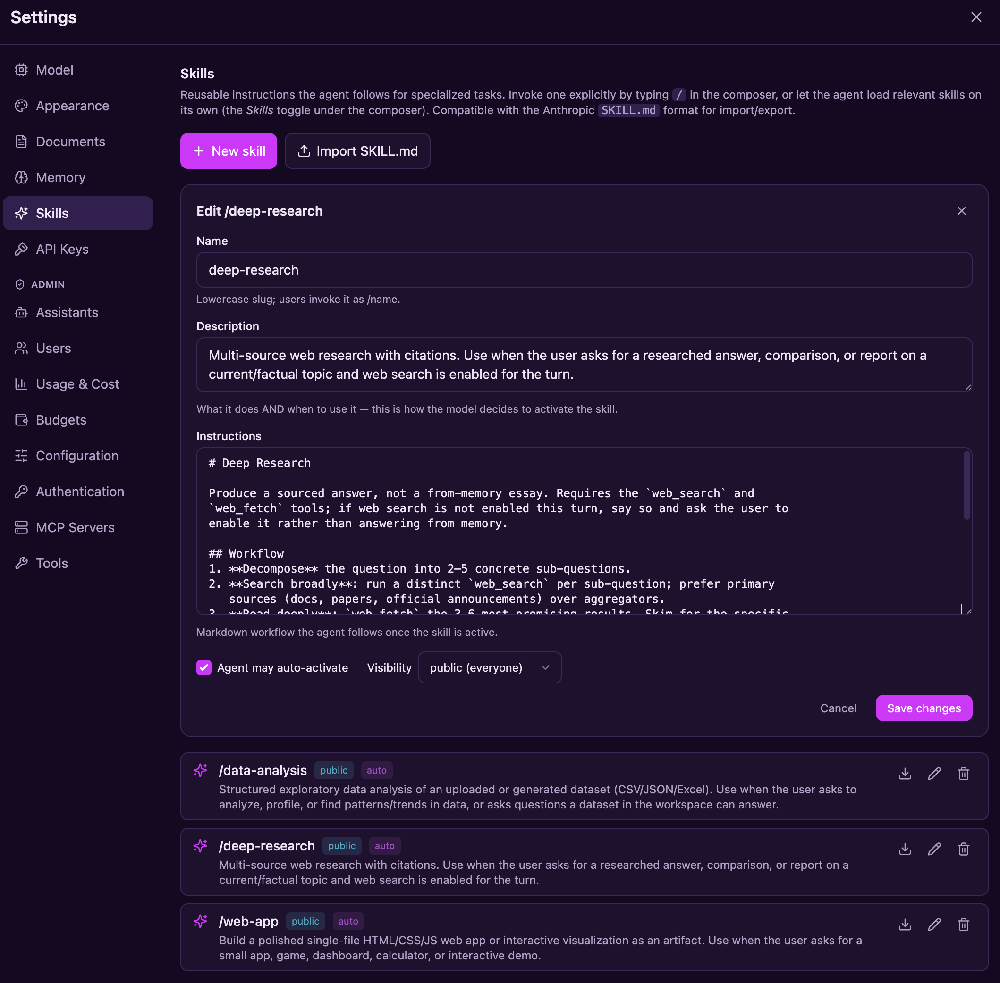
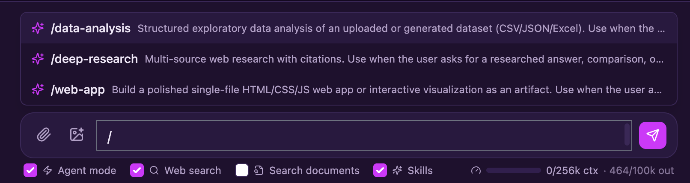
/ in the composer to pick a skill — its full instructions are injected for that turn, while the Skills toggle lets the agent choose one on its own.Upload PDFs, Office docs, markdown, or source code. Phlox parses, chunks, and embeds them into Qdrant, then retrieves with true hybrid search — a dense semantic vector and a sparse lexical vector per chunk, fused with RRF and reranked, returning numbered citations the model is instructed to cite.
@[n]Auth is on by default, data is scoped strictly per user, and every sensitive tool runs behind a permission gate you control.
Local accounts (bcrypt + JWT) or Microsoft Entra ID SSO. user / admin roles, strict per-user isolation — admins manage accounts but can't read others' content.
Run agent code in a fast local subprocess, an ephemeral Podman/Docker container with CPU/memory/PID limits and network isolation, or off-host in an AWS Bedrock AgentCore microVM with kernel-level isolation.
Each tool is auto, ask, or deny. Mutating and execution tools default to ask; an Agent-mode toggle auto-approves for a single turn.
Edit provider profiles, model pricing, resilience, and sandbox limits from an admin panel — applied without a restart. API keys are write-only and masked.
Per-request structured logs, an optional OpenTelemetry tracing seam, and per-turn token/cost capture in a durable ledger.
A durable usage ledger outlives the accounts it tracks — a departed user's costs stay billable after their account is deleted. Usage by month × user × department × model, CSV-exportable.
Cap monthly spend per user or department. Users see a warning as they near the limit; priced models are blocked once it's reached — enforced for both chat and the API gateway, with a monthly reset.
Sub-agents inherit the turn's approval state instead of bypassing it, and web_fetch refuses private, loopback, and cloud-metadata addresses by default — the agent can't be steered into your internal network.
SQLite by default for a zero-setup start; point DATABASE_URL at PostgreSQL for production deployments. Deploy bare, under systemd, or as a Docker/Podman container.
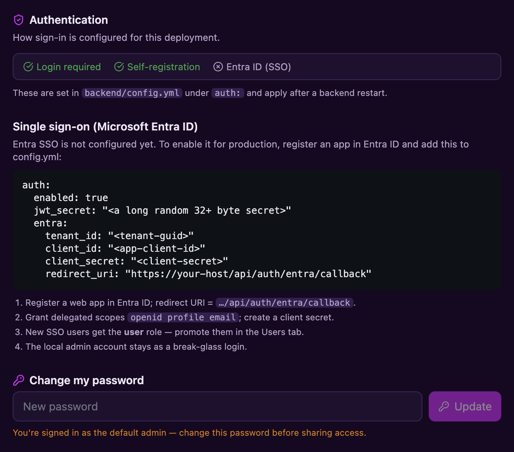
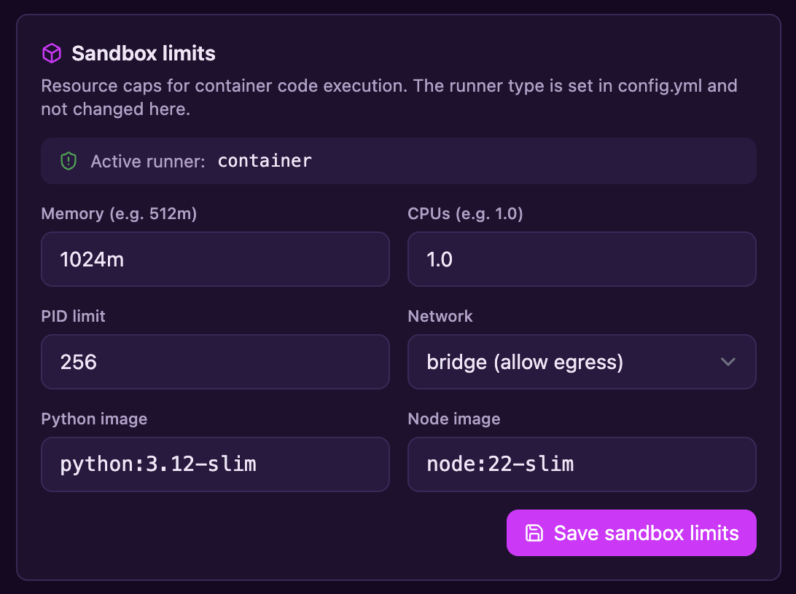
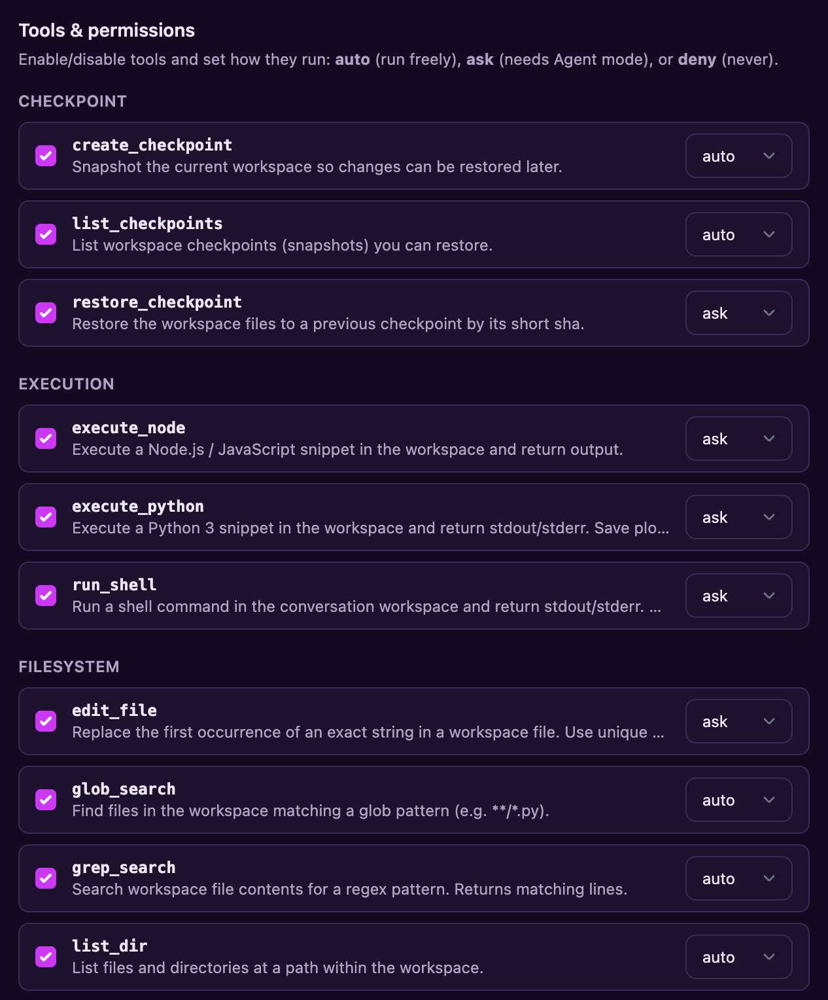
auto · ask · deny policiesOne admin-set policy inspects everything flowing to model providers — user messages, replayed history, tool results — and everything streaming back. Built-in detectors catch emails, phone numbers, SSNs, credit cards, and API keys; custom regex patterns cover the identifiers only your organization knows about. Content is inspected in memory and never stored.
/v1 gateway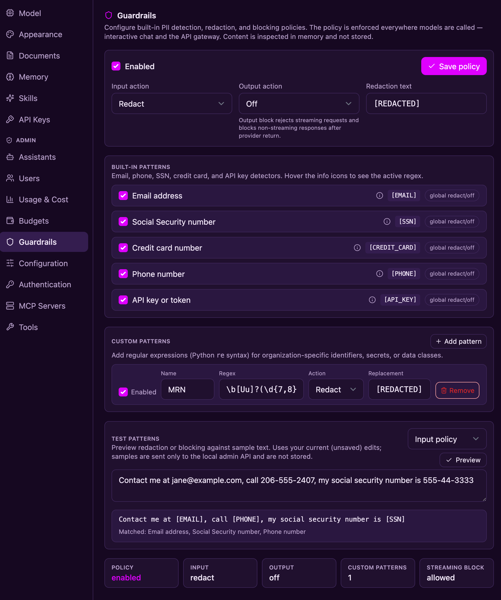
Beyond chat, Phlox is an OpenAI-compatible gateway with per-user API keys, live model pricing, department-level chargeback, and monthly spend budgets — the governance layer that turns a chat app into shared infrastructure.
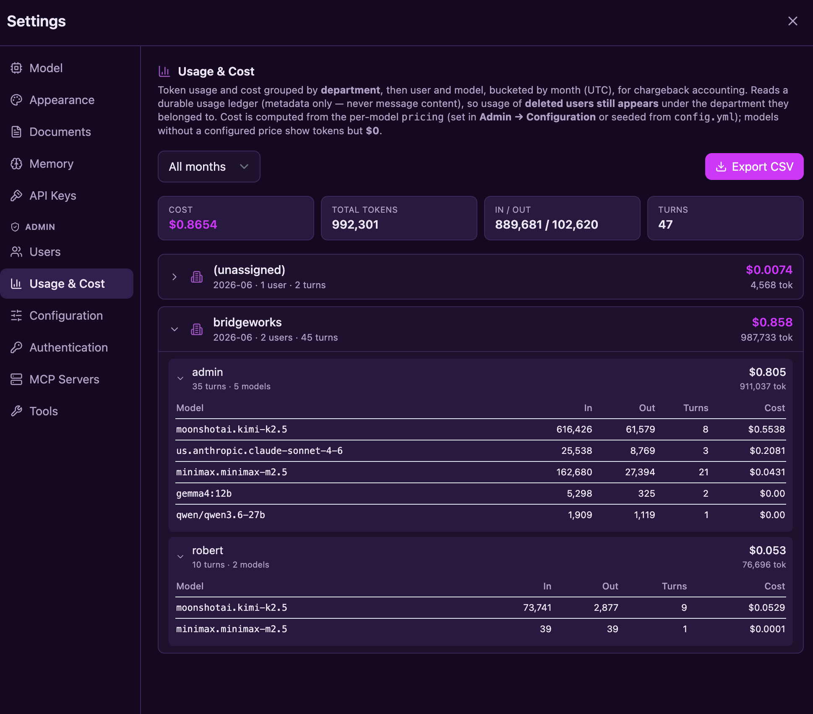
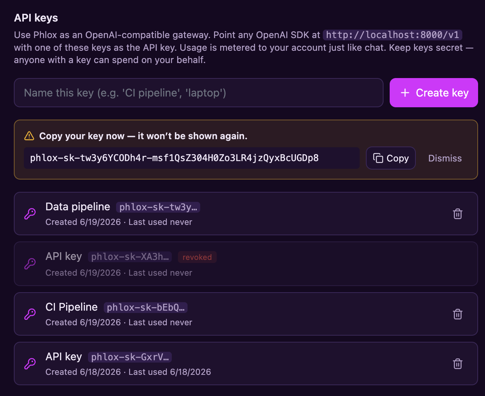
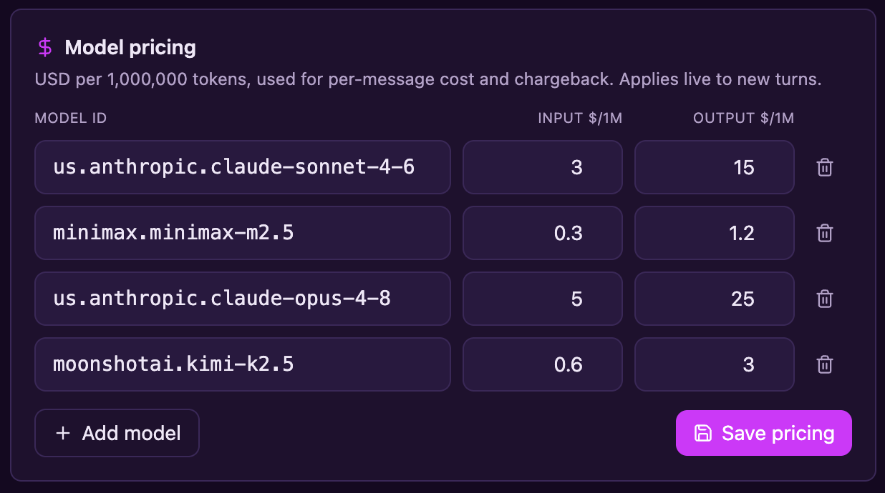
Give a user or a whole department a monthly cost ceiling. Phlox warns as they approach it and blocks priced models once it's reached — while free, locally-hosted models keep working. Enforcement is shared by chat and the API gateway, and budgets reset each month. Most-restrictive budget wins when both a user and department cap apply.
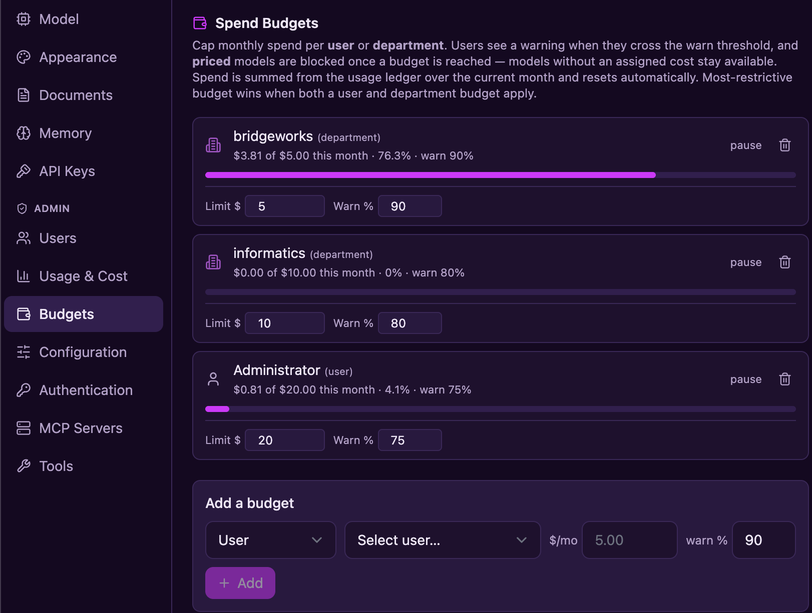
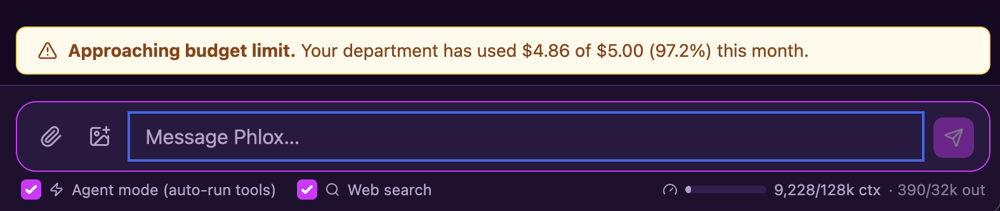
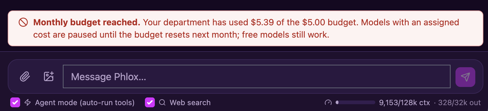
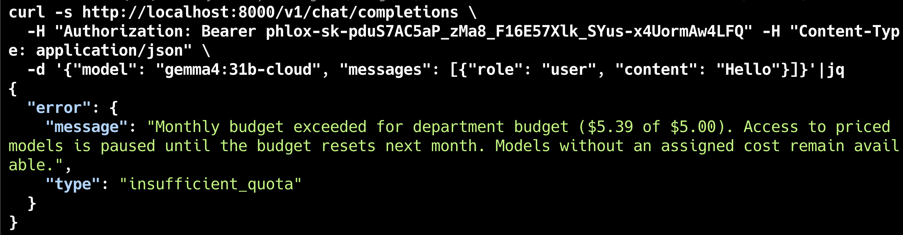
insufficient_quota errorA FastAPI backend handles LLM orchestration, the agent harness, MCP, RAG, code execution, auth, and persistence — SQLite by default, PostgreSQL for production. A React + Vite frontend renders the rich, streaming UI.
/api/chatIn dev, Vite proxies /api to FastAPI. In production, FastAPI serves the built SPA from frontend/dist — one command to run the whole thing.
A semantic CSS-variable token layer means themes change with no rebuild — and adding your own is two small edits.
One command builds and starts everything — it checks your prerequisites, installs dependencies on first run, seeds backend/config.yml, and opens your browser.
uv
Node 18+
A model provider — a local Ollama is the easiest
macOS, Linux, or Windows
git clone https://github.com/robert-mcdermott/phlox.git
cd phlox
./scripts/start.sh # dev: hot reload on :5173 + :8000
./scripts/start.sh prod # prod: single server on :8000git clone https://github.com/robert-mcdermott/phlox.git
cd phlox
.\scripts\start.ps1 # dev: hot reload on :5173 + :8000
.\scripts\start.ps1 prod # prod: single server on :8000
Missing uv or Node? The script tells you how to install them.
Press Ctrl+C to stop and free the ports — or run ./scripts/stop.sh
(.\scripts\stop.ps1 on Windows) any time. Prefer manual setup or a
Docker/Podman container? See the README and docs.
Auth is on by default with a seeded admin / admin —
change it and set a real jwt_secret before sharing access.
System map, request lifecycle, module guide — start here.
What's done and what's next across Tiers 1–5.
Production deployment on Linux under systemd.
Running Phlox in a container — Docker or Podman.
Local accounts, roles, isolation, and Entra ID SSO setup.
Local vs container vs off-host AWS AgentCore execution.
Token usage/cost, structured logs, OpenTelemetry tracing.
Monthly spend caps per user/department — warnings and enforcement.
OpenAI-compatible keys and /v1/* endpoints.
PII and custom-pattern redaction & blocking at the model-call seams.
Reusable SKILL.md workflows — invocation and auto-activation.
Connecting Model Context Protocol servers.
The theme token system and adding new themes.
Guides for adding new agent tools and providers.
Open source under Apache 2.0. Clone it, point it at a model, and run.